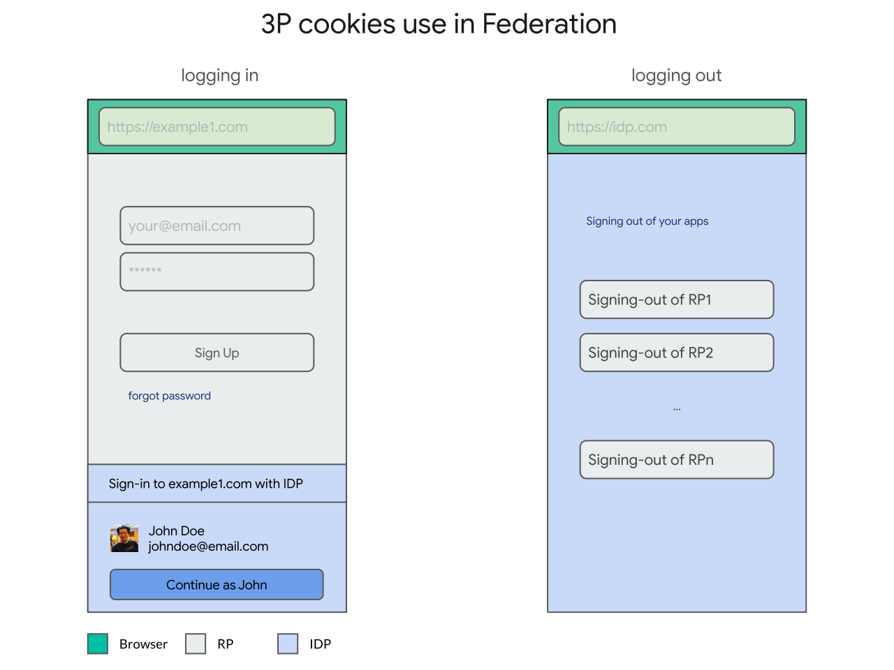

The Problem
Over the last decade, identity federation has unquestionably played a central role in raising the bar for authentication on the web, in terms of ease-of-use (e.g. passwordless single sign-on), security (e.g. improved resistance to phishing and credential stuffing attacks) and trustworthiness compared to its preceding pattern: per-site usernames and passwords.
The standards that define how identity federation works today on the Web were built independently of the Web Platform (namely, SAML, OpenID and OAuth), and their designers had to (rightfully so) work around its limitations rather than extend them.
Because of that, existing user authentication flows were designed on top of general-purpose web platform capabilities such as top-level navigations/redirects with parameters, window popups, iframes and cookies.
However, because these general purpose primitives can be used for an open ended number of use cases (again, notably, by design), browsers have to apply policies that capture the lowest common denominator of abuse, at best applying cumbersome permissions (e.g. popup blockers) and at worst entirely blocking them (e.g. blocking third party cookies).
Over the years, as these low level primitives get abused, browsers intervene and federation adjusts itself. For example, popup blockers became common and federation had to adjust itself to work in a world where popups blockers were widely deployed.
The challenge, now more than ever, is that some of these low level primitives are getting increasingly abused to allow users on the web to be tracked. So, as a result, browsers are applying stricter and stricter policies around them.
Publicly announced browser positions on third party cookies:
Blocking third party cookies broke important parts of the protocols in those browsers (e.g. logouts) and made some user experiences inviable (e.g. social button and widget personalization).
While it is clearer to see the current impact of third party cookies, it is equally important to understand the ways in which the low level primitives that identity federation depends on (e.g. redirects) are being abused and the principles browsers are using to control them, so that we don't corner ourselves into another dead end.
If browsers are applying stricter policies around the low level primitives that federation depends on, and under the assumption that federation is significantly better than usernames/passwords, how do we keep identity federation around?
Third Party Cookies
The problem starts with what we have been calling the classification problem.
When federation was first designed, it was rightfully designed around the existing capabilities of the web, rather than changing them. Specifically, federation worked with callbacks on top of cookies, redirects, iframes or popup windows, which didn't require any redesign, redeployment or negotiation with browser vendors.
One example of a low level primitive that federation depends on are iframes and third party cookies. For example, credentialed iframes are used while logging out and social button and widget personalization.

Unfortunately, that's virtually indistinguishable from trackers that can track your browsing history across relying parties, just by having users visit links (e.g. loading credentialed iframes on page load).
We call this the classification problem because it is hard for a browser to programatically distinguish between these two different cases: identity federation helping a user versus users being tracked without any control.

Third party cookies are already blocked in Safari and Firefox by default (and Chrome intends to block that soon too) which make these use cases inviable.
The problems then are:
- First and foremost, what Web Platform features need to be exposed to (re) enable these features of federation to co-exist with the absence of third party cookies in browsers going forward?
- Secondarily, in which direction browsers are going that could potentially impact federation?
Navigational Tracking
Before we prematuraly jump into solutions for the first (and more urgent) problem, we think there is something more fundamental changing. Lets take a step back and a closer look at the second problem: in which direction browsers are going that could more fundamentally impact federation?
While third party cookies in iframes are used in federation, a more fundamental low level primitive that federation uses is the use of top level navigations (e.g. redirects or form POSTs) to navigate the user to identity providers (with callbacks, e.g. redirect_uri) and back to relying parties with a result (e.g. an id_token):

However, unfortunately, this low level primitive also enable cross-site communication, namely via decorating links, which can be abused to track users without their control in what's called bounce tracking:

In this formulation of bounce tracking, websites redirect the user to cross-origin websites that automatically and invisibly redirect the user back to the caller, but passing enough information in URL parameters that allows the tracker to join that visit (e.g. when you visit rings.com) with visits in other websites (e.g. when you visit shoes.com).
In federation, that's less invisible/automatic, but it is still there. Cross-site tracking is enabled via federation when relying parties that the user signs in to collude with each other (and other entities) to deterministically (or probabilistically) link their user's accounts to build and get access to a richer user profile (e.g. one site selling data on browsing history for ads targeting to another service). While this could be enabled without federation per se (user could manually provide a joinable email address or phone number), federated identity providers have an opportunity to address this problem at scale by providing their users with site-specific/directed identifiers.

Because of these tracking risks, browsers are starting to disable third party cookies in iframes and more generally provide tighter control over cross-site communication (e.g. a privacy model for the web).
Because these cross-site communication takes place in a general purpose medium, it is hard for browsers to distinguish between cross-site communication that is used for exchanging identity data deliberately (e.g. federation) or unintentionally (e.g. tracking).
Browsers can't classify federation, hence the name.
The classification problem is notably hard because it has to deal with adversarial impersonation: agents who have the interest in being classified as federation to get access to browser affordances.
While the timeline for link decoration is much farther in time, it much more fundamentally threatens federation.
Publicly announced positions by browsers on bounce tracking:
- Safari's existing deployed strategies and principles
- Firefox's protection against redirect tracking
- Chrome's stated Privacy Model for the Web
So, how do we distinguish federation from tracking and elevate the level of control while assuming adversarial impersonation?